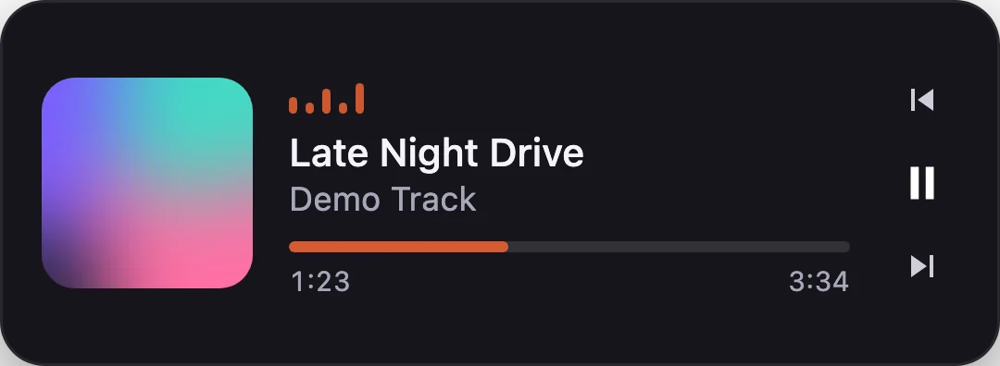
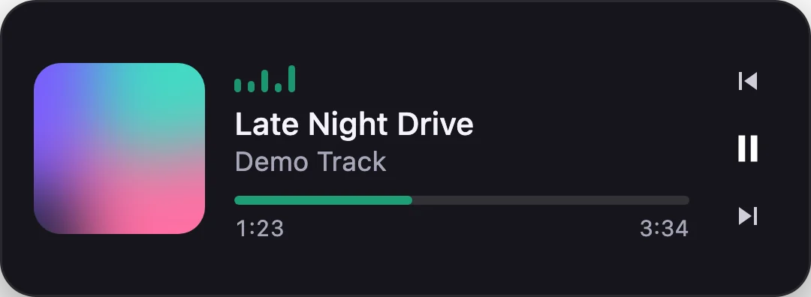

SpotiHUD
What's playing on Spotify, shown wherever I'm looking.
- Role
- Solo
- Platform
- Minecraft and macOS
- Status
- Mod and overlays working
- Built with
- Java, Fabric, Rust, Tauri, Swift, Core Audio



The problem
Checking what song is playing meant leaving whatever I was doing: a Minecraft world, a full-screen app, a game.
So I built a small now-playing display that sits where I'm already looking. Then I built it again for the desktop, and a third time for the Mac notch.
Three versions
1. The Minecraft mod
A Fabric mod for Minecraft 1.21 that signs in to Spotify with OAuth PKCE (no client secret stored anywhere), then draws album art, the track, a progress bar and waveform bars on the in-game HUD. It comes with a settings screen and unit tests for the auth flow, time formatting and HUD geometry.
2. The desktop overlay
A frameless, transparent, always-on-top window built with Tauri and Rust. You drag it anywhere, cycle colorways with one key, and switch click-through on so it never gets in the way. On the Mac it reads Spotify through AppleScript, because Apple closed the system Now Playing API to third-party apps in macOS 14.4.
3. A Dynamic Island for the Mac
A native SwiftUI panel pinned under the notch. It springs open on hover or when a new track starts, and its equalizer reacts to the actual music: a Core Audio process tap captures system audio, and a 1024-point FFT splits it into four bands with automatic gain control. Volume and microphone changes briefly take over the island, the way they do on an iPhone.
What I learned
- Read the refresh spec carefully. Spotify's PKCE token refresh fails with a 400 unless
client_idis in the body, so the mod signed people out after exactly one hour. It was an easy fix and a hard bug to find. - Never block the main thread on a system prompt. The island froze while macOS was waiting on its "control Spotify" permission dialog, because AppleScript ran on the UI thread. Now every call runs in the background.
- Fall back gracefully. If audio capture is denied or silent, the bars switch to a gentle synthetic animation instead of lying flat.